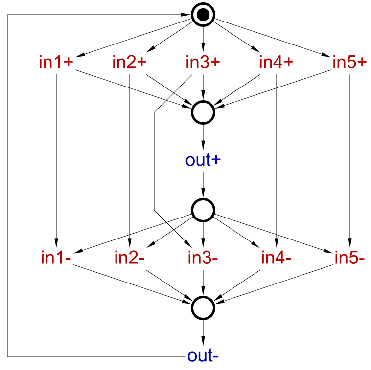
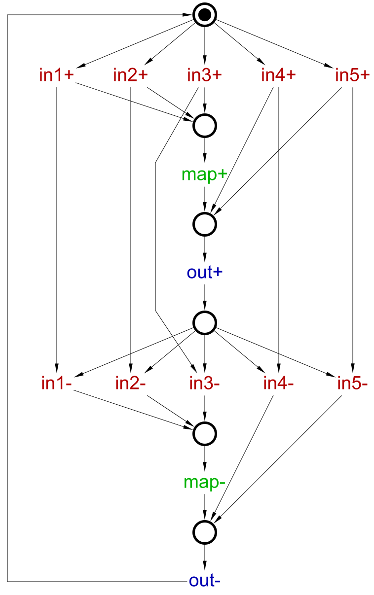
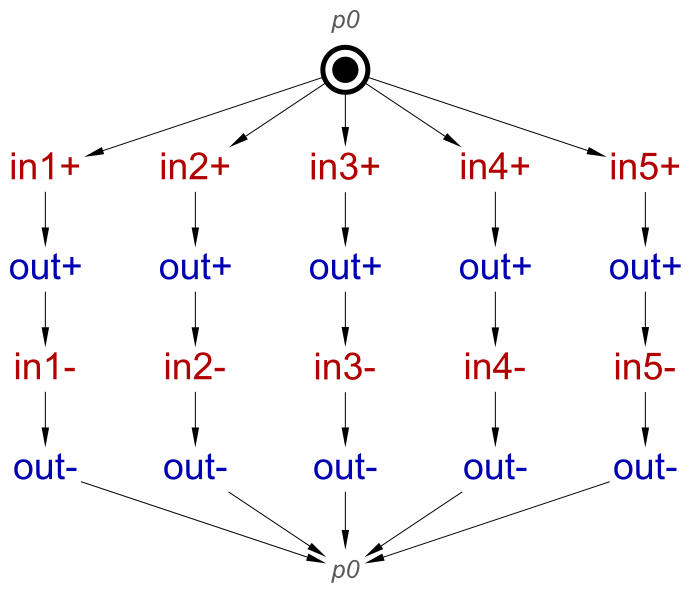
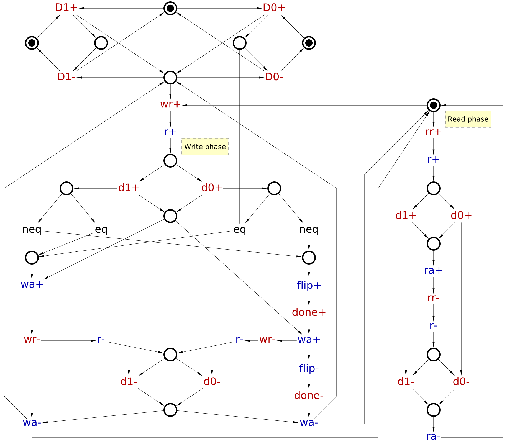
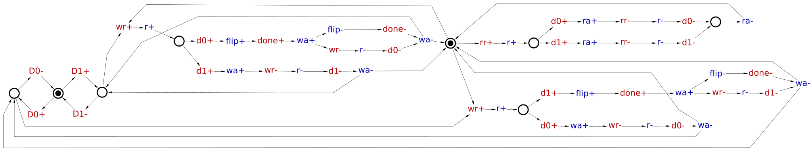

Table of Contents
Logic decomposition and technology mapping
- Before starting this tutorial you are strongly recommended to complete the Resolution of encoding (CSC) conflicts one.
- For this tutorial you will need several example models open in Workcraft; you can download them either as a single *.zip archive (62 KiB) or individually, when reaching the concrete example.
Logic decomposition is the process of breaking up large complex-gates into smaller ones, e.g. replacing a 3-inputs AND gate with a pair of 2-inputs AND gates. Note that in contrast to synchronous circuits where Boolean equivalence is sufficient to guarantee the correctness of logic decomposition, for asynchronous circuits it is insufficient – e.g. the described decomposition of an AND gate may break the circuit.
Technology mapping is the process of assigning gates from a gate library to implement “abstract” (given as Boolean functions) gates of the circuit.
In Workcraft, logic decomposition and technology mapping are always performed together and are combined with synthesis. That is, given an STG, Workcraft can:
- synthesise it
- break up complex gates
- map them to the gate library
as a single action, via the Synthesis→Technology mapping [MPSat] or Synthesis→Technology mapping [Petrify] menu entries. In the rest of this tutorial, the term technology mapping will be used as a short-cut for “synthesis, logic decomposition and technology mapping”.
Technology mapping in the context of asynchronous circuits is a complicated process that can fail. In fact, it is an open problem whether every complex-gates synthesisable STG can always be mapped to a fixed finite gate library (e.g. all gates with up to 2 inputs), and it is strongly suspected that the answer is negative. In practice, Petrify and MPSat back-ends deploy various heuristics to decompose the circuit, and occasionally fail.
This tutorial gives an introduction to technology mapping in Workcraft, and presents some techniques and tricks to help the tool to succeed and produce a better circuit.
Example: VME bus controller (read phase)
Consider the following STG modelling the read phase of the VME bus controller (a more complete version of VME bus controller can be found in Synthesis and verification of VME bus controller tutorial). Note that the CSC conflicts in this STG have already been resolved with the help of internal signal csc.
 |
| STG for read phase of VME bus controller with resolved CSC conflict vme-read-csc.stg.work (3 KiB) |
Petrify back-end does not require CSC conflicts to be resolved, and if one attempts to synthesise the circuit with CSC conflicts, it tries to resolve them before proceeding with the synthesis. However, MPSat back-end does require CSC conflicts to be resolved prior to synthesis, and fails if the STG has CSC conflicts. One can verify if an STG has CSC conflicts via Verification→Complete State Coding (all cores) [MPSat]. CSC conflicts can be resolved, either automatically via Tools→Encoding Conflicts→… or manually, see Resolution of encoding (CSC) conflicts tutorial.
This STG can be synthesised using complex-gates, via Synthesis→Complex gate […], and the resulting circuit is as follows (after manual layouting):
 |
| Complex-gate implementation vme-read-csc.circuit.work (4 KiB) |
This circuit is not mapped yet, i.e. complex-gates are just Boolean functions of arbitrary size, e.g. they can be not implementable by any library gate. In this case, however, the STG was tiny and all the gates in the circuit are likely to be mappable to a realistic gate library.
Workcraft provides several gate libraries in the SIS genlib format, and the user can easily add a new library.
The default library is workcraft.lib, and this library will be used below. However, it is possible to tell Workcraft to use another library by amending the Gate library for technology mapping setting in the Edit→Preferences… window under the Models→Digital Circuit leaf.
Complex-gate and standard-C syntheses are oblivious to the gate library – the implementations they yield are Boolean functions of arbitrary complexity. These functions are often too large to be implemented by a single gate available in the gate library. Unfortunately, breaking up a complex-gate into smaller ones, when performed naïvely, generally yields an incorrect circuit – this happens due to the delays associated with the outputs of the newly introduced gates. To illustrate this problem, suppose the gate library only has gates with up to two inputs. One may try to break up the 3-input gate implementing csc in the above circuit into a 2-input bubble-OR gate followed by a 2-input AND, as shown below, which would preserve the Boolean function computed by the gate.
|
|
Naïve decomposition of csc signalvme-read-csc-naive.circuit.work (4 KiB) |
This can be done by right-clicking this gate and selecting Split multi-level gate from the pop-up menu. (Alternatively use Transformation→Split multi-level gates (selected or all) menu.) Unfortunately, the new delay associated with the output of bubble-OR gate breaks the speed-independence of the circuit, and it no longer satisfies the conformation and output persistency properties in the Verification menu.
Let us now try automatic decomposition. First, we need to restrict the default library to 2-input gates: In the Edit→Preferences dialog, select External tools→MPSat synthesis and tick the Edit additional parameters before every call checkbox. Then select Synthesis→Technology mapping [MPSat]. A dialog box will pop up asking for extra command line parameters to pass to MPSat – type -g2 to restrict MPSat to gates/latches with at most two inputs (see MPSat command line options for details). The following circuit (the layout was manually improved) can then be synthesised (note that solution is not unique and you may get a slightly different one).
 |
| Technology mapping into 2-input gates vme-read-csc-mapped-celement.circuit.work (4 KiB) |
The circuit is now mapped – the gate labels correspond to the gate names in the library. Interestingly, MPSat replaced the 3-input gate with feedback by a latch. In fact, this replacement is not equivalent in the Boolean sense – there is a difference when dsr=ldtack=0 and csc=1; however, no such state is reachable, so this implementation is correct – this can (and should!) be formally verified using Verification menu.
It is impossible to find this mapping by considering only the original complex-gate circuit, as the set of reachable states depends on both, the circuit and its environment, and the behaviour of the environment cannot be deduced from the circuit. Hence the STG (representing the contract between the circuit and its environment) plays a crucial role in asynchronous synthesis.
Note that the inverter at the input of the C-element has a dotted line through, indicating that there is a zero-delay assumption on it, i.e. it must be placed next to the C-element and its worst-case delay should be smaller then any other gate delay. This is usually unproblematic as long as such input inverters are placed next to the main gate, but in some situations this assumption may be questionable; moreover, this assumption introduces extra constraints that have to be satisfied during placing and routing. In this case this assumption is actually superfluous: select this inverter, un-tick the Zero delay checkbox in the Property editor, and verify the resulting circuit.
In this particular case no logic decomposition was necessary – the library happened to have a latch that would directly (with an extra inverter) implement csc. Let us now restrict the library to 2-input gates and no latches, to force MPSat to perform logic decomposition. Select Synthesis→Technology mapping [MPSat] and a dialog box will pop up asking for extra command line parameters to pass to MPSat – type -g!2 (see MPSat command line options for details). The following circuit (the layout was manually improved) can then be synthesised (note that solution is not unique and you may get a slightly different one).
 |
| Technology mapping into 2-input combinational gates vme-read-csc-mapped-2input.circuit.work (4 KiB) |
This time the 3-input gate was decomposed into two 2-input gates, i.e. logic decomposition did occur. This decomposition resembles (after reshuffling the bubbles) the incorrect naïve one described above, but in fact there is an important difference: The output of the leftmost gate is now forked, so each transition of this gate is acknowledged by (i.e. causes) a transition on one of the two gates it is driving. The principle that each signal transition must be acknowledged is fundamental for speed-independent circuits, and its violation in the naïve design described above was indicative of its incorrectness.
Do not forget to un-tick the Edit additional parameters before every call checkbox (unless you want to be prompted for extra parameters every time MPSat synthesis is invoked).
Overcoming technology mapping failure
As was already explained above, technology mapping in the context of asynchronous circuits is a difficult problem, and the tools occasionally fail to solve it. This section describes several techniques and tricks for overcoming this problem.
Hierarchical design
An ounce of prevention is worth a pound of cure!
A common mistake of novice designers is to attempt creating a single large monolithic STG capturing the behaviour of the whole system. The complexity of technology mapping (and of everything else) can be significantly reduced if one acts early on and uses hierarchical decomposition of a complex design into smaller modules (communicating e.g. by handshakes), which are decomposed into even smaller modules, etc., until the terminal modules are small enough (e.g. have only a handful of signals – if a module has more than 10-12 signals it usually should be decomposed). As an example, consider the following hierarchy for a single phase of a multi-phase buck controller [1]:

The following tutorials illustrate this approach:
The hierarchical approach has a number of important advantages:
- Hierarchical designs are easier to comprehend, document, explain to other people, and maintain.
They also look better than large monolithic STGs on PowerPoint slides. - Designing several small STGs is almost always simpler than designing a large monolithic one – and also reduces the risk that the STG does something unexpected.
- It is often the case that some of the modules can be re-used within a design (or even by different designs); hierarchical approach helps identifying such reusable components.
- Hierarchical design avoids creating large monolithic STGs, which are difficult for the tools to synthesise. It should be stressed that if one sets out to create a large monolithic STG, technology mapping is almost certainly will be a major challenge.
Partitioning a module into smaller ones in a meaningful way is a creative problem. A possible approach could be:
- Think of the output signals of the module as “what the module computes”.
- Partition the output signals into two (or more) sets – hopefully, in a meaningful way, so that “related” outputs are kept together; from each of these sets a new sub-module will be created.
- The set of signals in each sub-module has to be iteratively expanded by including any signal that triggers or is in the choice relationship with an already included output signal. (Choices involving outputs violate output persistency, so it's mostly about keeping a mutex's outputs in the same module.) The triggering signals become inputs of the module: It is ok to share the module inputs between several sub-modules, and an output of one sub-module could be an input of 0 or more other sub-modules, but no signal can be an output of more than one sub-module.
- If you had to include all (or most) outputs of one sub-module into another, you may merge the former sub-module into the latter one.
- Some extra communication between the sub-modules may be required, e.g. new handshakes. If several modules form a token ring, it may be possible to use one signal per link rather than a handshake, e.g. see the example in Verification and synthesis of hierarchical designs.
One would wish the hierarchical approach to eliminate the problems during technology mapping, making it fully automatic. However, there are still practical situations when one has to help the tools:
- “I see the light and will always follow the hierarchical approach from now on, but I have several large monolithic STGs from my dark past, which must be mapped by tomorrow.”
- “I inherited a large monolithic STG from another designer.”
- “I cannot think of any meaningful way to decompose this module.”
- “I faithfully followed the hierarchical approach, but the tools still failed on a relatively small module.”
- Etc.
The rest of this section is describing various tips and tricks which may help in such situations. There is still no guarantee of success, so the ultimate fall-back position is appealing to the designer's “high-level understanding of the system”, “creativity”, and the ability to “think outside the box”.
Expanding the gate library
Consider the following STG specifying a 5-input OR function with mutually exclusive inputs:
|  |
| STG for 5-input OR function or5.stg.work (4 KiB) |
The complex-gate implementation is a 5-input OR gate as expected, but Workcraft's default gate library does not have an OR5 gate, and both Petrify and MPSat fail to decompose this example. If extending the gate library is an option, one can just add an OR5 gate to it. Unfortunately, expanding the library is rarely an option.
Insertion of helper internal signals
Logic decomposition is the most difficult part of the process, and technology mapping (in the narrow sense) is simple once logic decomposition succeeds in breaking up the gates into ones directly mappable to the gate library. The tools perform logic decomposition at the level of the STG, by adding internal signals corresponding to various sub-functions of complex-gates. This process heavily relies on heuristics, so a designer can help the tool by inserting a new internal signal implementing some useful sub-function. (Tutorial Resolution of encoding (CSC) conflicts explains how to insert internal signals into an STG.)
The reason why Petrify fails for the above STG is unclear (probably some unlucky application of a heuristic). The reason for MPSat's failure is that it inserts signals structurally into the STG, and only a restricted classes of insertions are possible, all of which happen to be not applicable to this STG. The designer can help the tool by inserting a signal to split off a 3-input OR function, as shown below. Signal map can then be implemented as OR3(in1,in2,in3), and then out can be implemented as OR3(map,in4,in5), and the tools now easily find this implementation.
|  |
STG for 5-input OR function with helper map signalor5-split.stg.work (4 KiB) |
Simplifying STG structure
Another important approach is to simplify the structure of the STG by reducing the number of choice and merge places – this will help MPSat that uses structural insertions. The 5-input OR STG above has quite a contrived structure, with several choice and merge places. The place at the top models free choice between the inputs – it is essential, so one has to keep it. The following merge place is used only to execute a single output transition, and is immediately followed by a controlled choice place, with the extra parallel arcs between input transitions to keep track of the current branch. One can simplify the structure considerably, by replicating transitions of out, removing also the final merge place. Note that both STGs below are semantically identical, but the one on the right uses a proxy place (this feature is accessible from the Transformations menu) to improve the layout. Now both Petrify and MPSat have no difficulty mapping this simplified STG.
 |
| Simplified STG for 5-input OR or5-simple-structure.stg.work (4 KiB) |
|  |
| Simplified STG for 5-input OR with a proxy place or5-simple-structure-proxy.stg.work (4 KiB) |
STG re-synthesis
STG re-synthesis is an automatic process involving building the state graph of the given STG and then deriving an equivalent STG from this state graph. This may simplify the structure of the STG, so it is related to the above approach. Note that the resulting STG is not necessarily the simplest possible one, e.g. for the OR5 example re-synthesis derives an STG with two non-implicit places, which still cannot be automatically mapped. Nevertheless, when technology mapping fails, you may try to push your luck by re-synthesising the STG and mapping the result. For example, consider the following STG (an early version of the design in [2] that did not make it to the paper):
|  |
| STG for master module of SRAM controller master-read-write-interface.stg.work (8 KiB) |
This STG has a rather contrived structure with many choice and merge places, and also has four dummy transitions (dummies are generally ‘difficult’ for some of the synthesis and verification tasks in Workcraft). Not surprisingly, MPSat fails to map this circuit; Petrify at first seems to succeed, but the resulting circuit has gates with disconnected pins and fails the verification (looks like a bug in the tool).
Let us try to re-synthesise this circuit, removing also the dummies. This can be done by selecting the four dummy transitions with the mouse while holding Shift, and then choosing Conversion → Net synthesis hiding selected signals and dummies [Petrify with -er option] (the -er option tells the tool to create different transitions for instances of the same signal if their excitation regions in the state graph are disjoint – this often helps to simplify the structure; occasionally, a similar command without -er is also helpful, so you may try that as well). The resulting STG is shown below (note that you may get a slightly different one, or layout may change) – its structure is much less contrived (fewer choice and merge places) and there are no dummies. Now MPSat has no difficulty completing technology mapping, and the resulting circuit passes verification, both wrt. the re-synthesised STG and wrt. the original one (except that Workcraft complains that output persistency cannot be checked due to dummies). Note that you can set the STG to check the circuit with in the Property editor.
|  |
| Resynthesised STG for master module of SRAM controller master-read-write-interface-resynth.stg.work (8 KiB) |
Concurrency reduction
Concurrency reduction is another useful technique that was explained in the Resolution of encoding (CSC) conflicts tutorial. However, it can be applied not only for CSC resolution, but also for simplifying the circuit, which may help technology mapping. As an example, consider the control logic of WAITX [3] – an element from the family of Asynchronous Arbitration Primitives.
The STG for this controller is shown below – note that internal signal csc
and two concurrency reductions (the amber arcs) were used to solve the CSC conflicts. The complex-gate
implementation has gates with up to eight inputs. Even though automatic technology mapping succeeds,
the resulting circuit is not particularly good – the circuit's area is large
(220 units for MPSat and 228 for Petrify – you may get different results), with several large gates.
 |
| STG for WAITX with resolved CSC conflicts waitx.stg.work (6 KiB) |
The following STG shows how to add two more concurrency reductions – the “high-level understanding of the design” allows one to conclude that these concurrency reductions are unlikely to harm the performance. The modified STG turns out to be much easier to map and the circuit is better (the area is 156 units for MPSat and 152 for Petrify – you may get different results) with much smaller gates (the circuit in [3] was then slightly improved manually).
 |
| STG for WAITX simplified by concurrency reduction waitx-cr.stg.work (6 KiB) |
STG decomposition
Occasionally one has no choice but re-designing the given large STG as a composition of smaller ones, as described in the Hierarchical design section above. This is a creative process that requires deep understanding of the design, though DesiJ tool can assist the designer, and even automatically create a set of mappable sub-modules in some lucky cases.
Non-speed-independent decomposition with relative timing assumptions
If the approaches outlined above fail or not applicable, one can map the circuit by doing non-speed-independent decomposition, and rely on timing to guarantee correctness. Relative timing assumptions (RTA) were explained in the Resolution of encoding (CSC) conflicts tutorial.
RTAs can be a real help, but they do require a lot of care as it is easy to make a mistake, and they have to be taken into account at the place-and-route stage of the circuit design.
For example, let us re-consider the naïve decomposition of the VME bus controller introduced above:

This decomposition is not speed-independent, i.e. various correctness properties will be violated under certain gate delays, in particular if the gate implementing x is relatively slow (or there is a long wire from it to gate csc). However, it may be possible to eliminate all the violations by ensuring that the gate delays are such that no violation trace can happen due to timing, in this case by ensuring that x is relatively fast. Indeed, this design was obtained from a correct complex-gate implementation by splitting an atomic 3-input gate implementing csc into two 2-input gates, x and csc, and the violations are due to the new delay associated with gate x – this delay did not exist when the corresponding sub-function was inside the 3-input complex-gate regarded as atomic. Intuitively, if this delay is sufficiently short (e.g. shorter than the shortest possible delay of any other gate in the circuit, though less stringent constraints can often be derived by careful analysis), the two gates will behave as a single atomic complex-gate. This consideration motivates the use of zero-delay inverters – these are usually the fastest gates in the library, but one has still to be careful and place them next to the main gate. However, for more complicated gates careful timing analysis is necessary to derive less stringent RTAs, e.g. for this circuit one can show that the following two RTAs are sufficient to guarantee its correctness:
MaxDelay(x-) < MinDelay(d- → lds-) MaxDelay(x-) < MinDelay(d- → dtack- → dsr+)
Note that timing analysis required to obtain these constraints is non-trivial and is beyond the scope of this tutorial.
Solutions
Download all the Workcraft models discussed in this tutorial here:
Models for technology mapping (62 KiB)
===== Feedback =====
- As discussed in https://www.dokuwiki.org/plugin:include#controlling_header_size_in_included_pages, by default, the headers in included pages start one level lower than the last header in the current page. This can be tweaked by adding an empty header above the include:\\
====== ====== {{page>:tutorial:feedback&inline}} - For offline help generation the content of
feedbackpage should be temporary wrapped in<WRAP hide>. Note that the headers still propagate to the table of contents even if inside the hidden wrap. Therefore the Feedback title needs to be converted to something else, e.g. to code by adding two spaces in front.